01 · Blanc & bleu francCentrée éditorialeDéfilé · Carrousel à flèchesMouvement · Montée depuis le bas3D · Portes qui pivotentQuatre cartes · Système
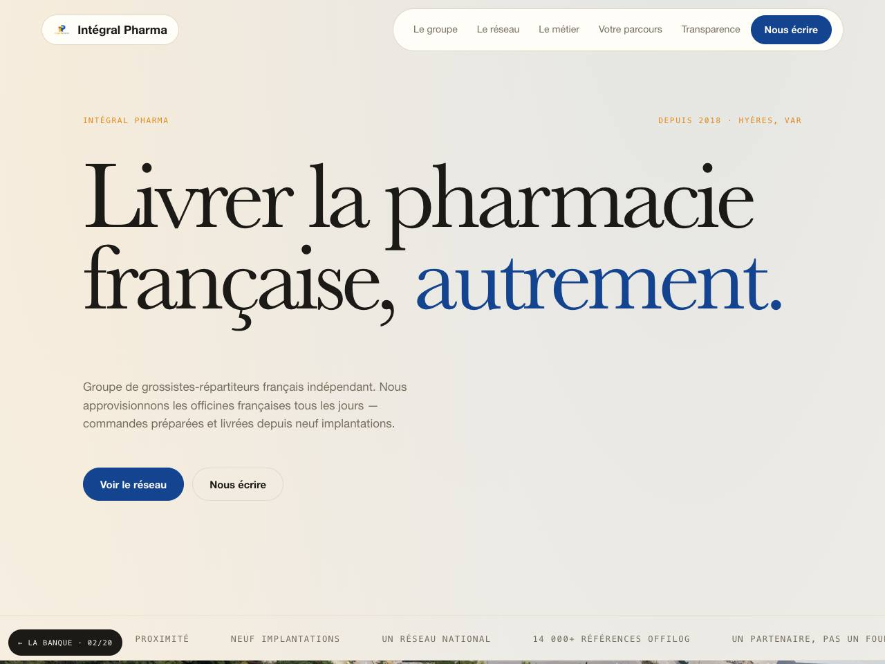
02 · Sable & bleuNom géantDéfilé · Défilé continuMouvement · Cascade3D · Inclinaison au survolAplats jointifs · Baskerville & Helvetica
03 · Nuit bleutéePartagée avec photoDéfilé · Calage au scrollMouvement · Mots qui montent un à un3D · Chiffres qui basculentBlocs collants · Futura & système
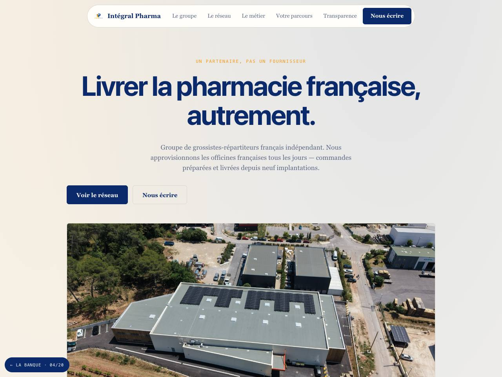
04 · Bleu nuit sur papierPhoto pleine largeurDéfilé · OngletsMouvement · Trait qui se trace3D · Panneaux repliésFrise · Sans titre, serif texte
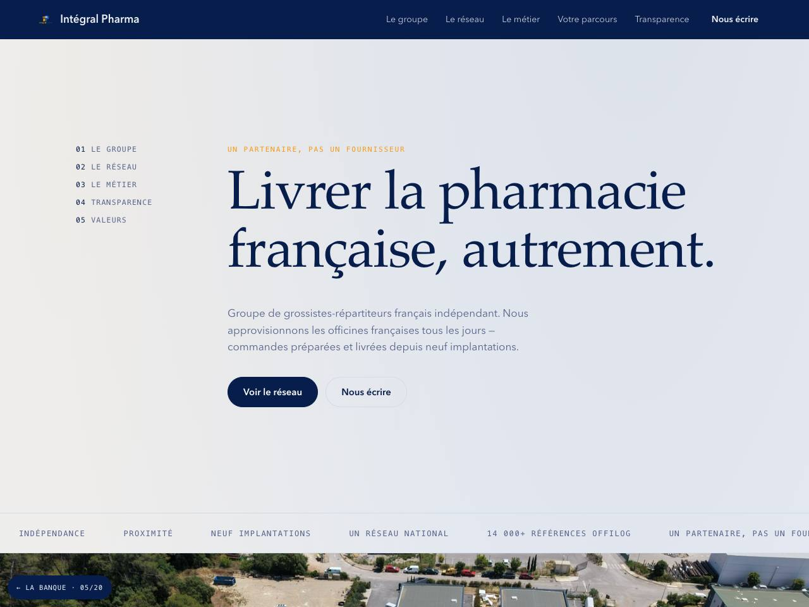
05 · Bleu profond clairIndex numérotéDéfilé · AccordéonMouvement · Montée depuis le bas3D · Inclinaison au survolLignes numérotées · Palatino & Avenir
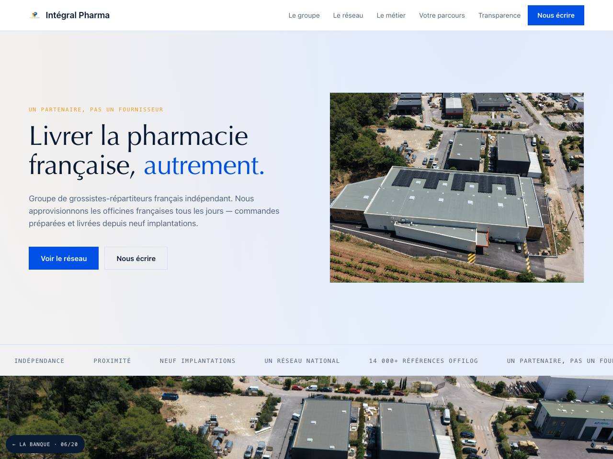
06 · GlacierPartagée avec photoDéfilé · Carrousel à flèchesMouvement · Cascade3D · Portes qui pivotentQuatre cartes · Optima & système
07 · PoudréCentrée éditorialeDéfilé · Défilé continuMouvement · Trait qui se trace3D · Chiffres qui basculentAplats jointifs · Charter & Avenir
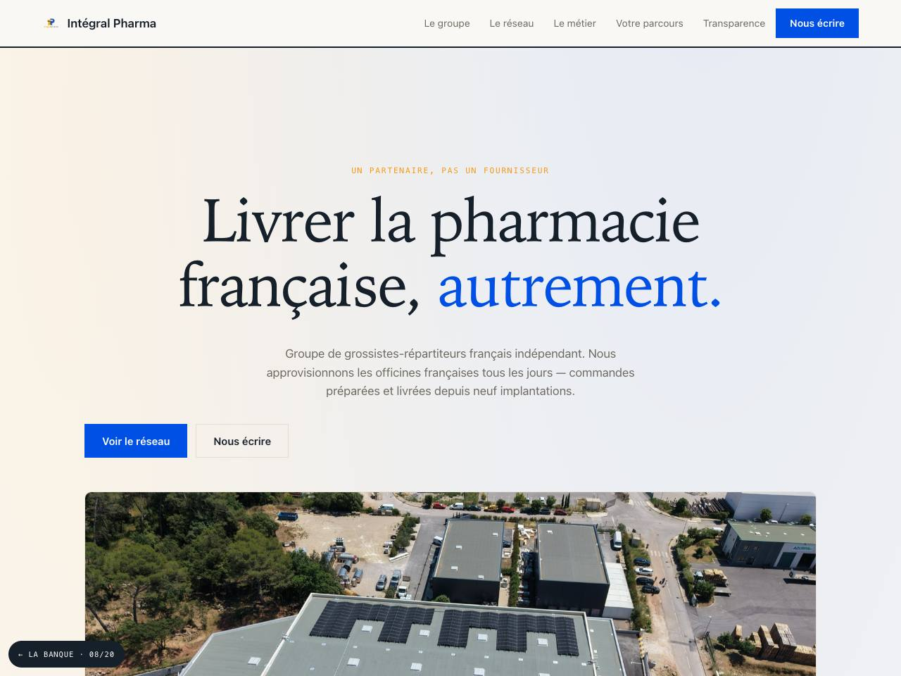
08 · Crème & bleuPhoto pleine largeurDéfilé · Calage au scrollMouvement · Compteurs qui montent3D · Inclinaison au survolBlocs collants · Iowan & système
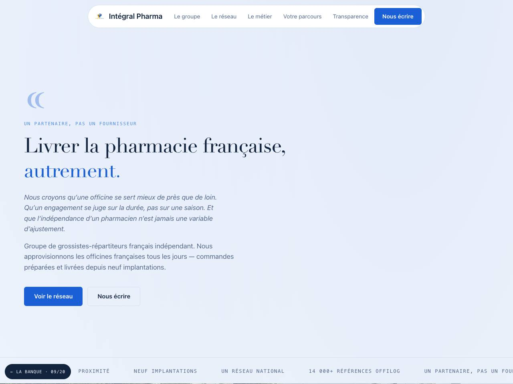
09 · Camaïeu de bleusManifeste citéDéfilé · Empilement collantMouvement · Dévoilement par masque3D · Panneaux repliésFrise · Didot & système
10 · Ardoise & ambreChiffre géantDéfilé · AccordéonMouvement · Zoom doux3D · Chiffres qui basculentLignes numérotées · Superclarendon
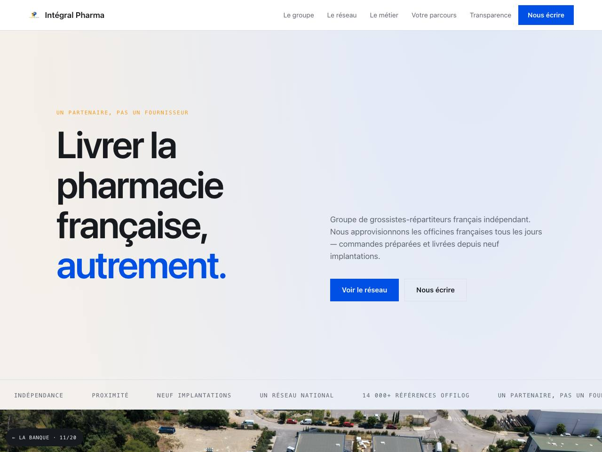
11 · AcierDeux colonnesDéfilé · Défilé continuMouvement · Mots qui montent un à un3D · Portes qui pivotentQuatre cartes · Système
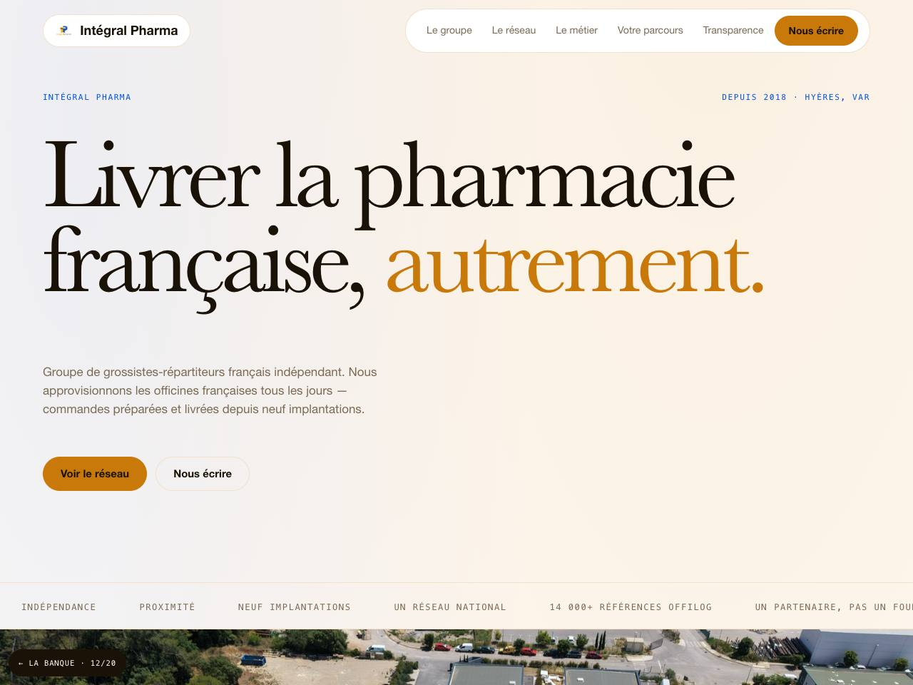
12 · MandarineNom géantDéfilé · Carrousel à flèchesMouvement · Trait qui se trace3D · Panneaux repliésAplats jointifs · Baskerville & Helvetica
13 · Encre & orangeIndex numérotéDéfilé · Volets qui montentMouvement · Dévoilement par masque3D · Chiffres qui basculentBlocs collants · Futura & système
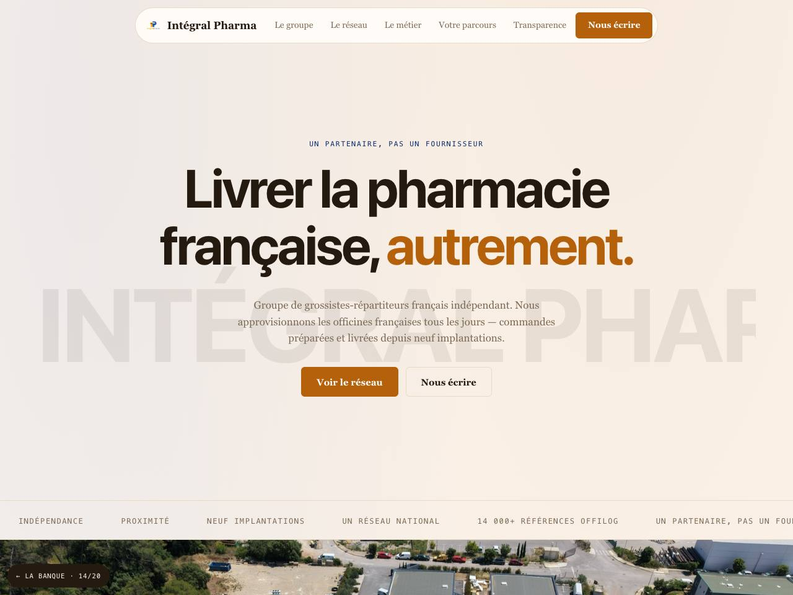
14 · Orange brûléBandeau défilantDéfilé · Empilement collantMouvement · Compteurs qui montent3D · Inclinaison au survolFrise · Sans titre, serif texte
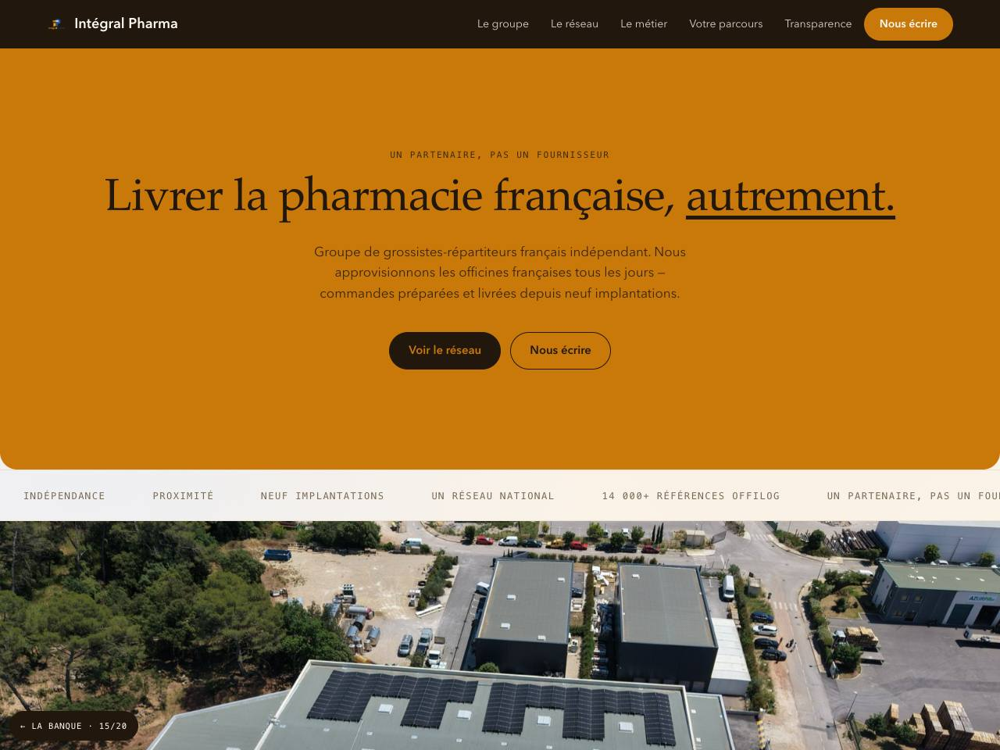
15 · Crème & orangeAplat coloréDéfilé · Défilé continuMouvement · Glissement alterné3D · Panneaux repliésLignes numérotées · Palatino & Avenir
16 · Contraste netManifeste citéDéfilé · Pagination par pointsMouvement · Dévoilement par masque3D · Inclinaison au survolQuatre cartes · Optima & système
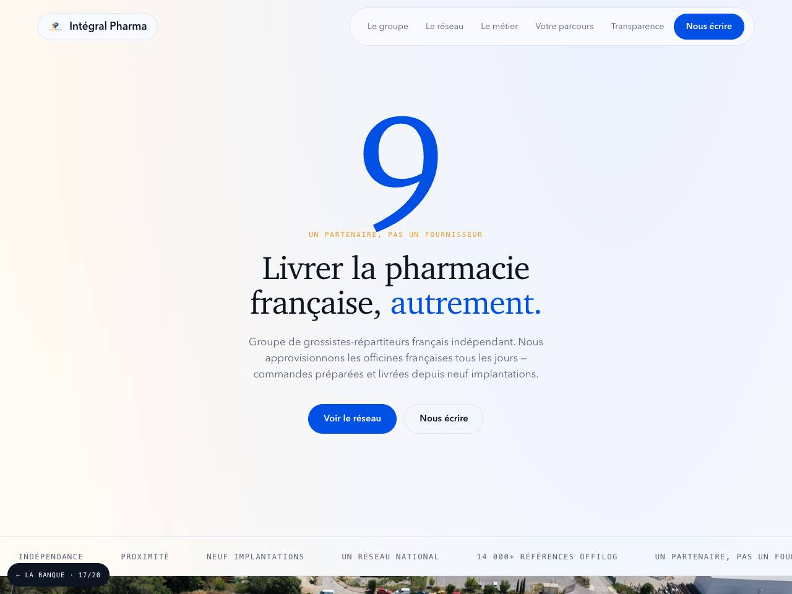
17 · Blanc & bleu francChiffre géantDéfilé · Volets qui montentMouvement · Glissement alterné3D · Inclinaison au survolAplats jointifs · Charter & Avenir
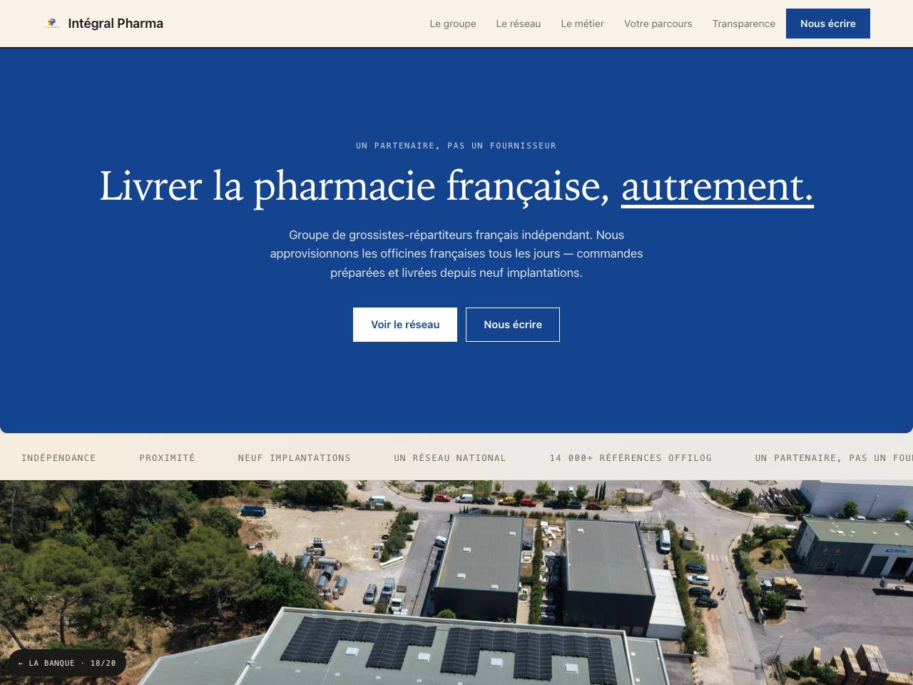
18 · Sable & bleuAplat coloréDéfilé · Carrousel à flèchesMouvement · Dévoilement par masque3D · Chiffres qui basculentBlocs collants · Iowan & système
19 · Nuit bleutéeBandeau défilantDéfilé · Pagination par pointsMouvement · Glissement alterné3D · Chiffres qui basculentFrise · Didot & système
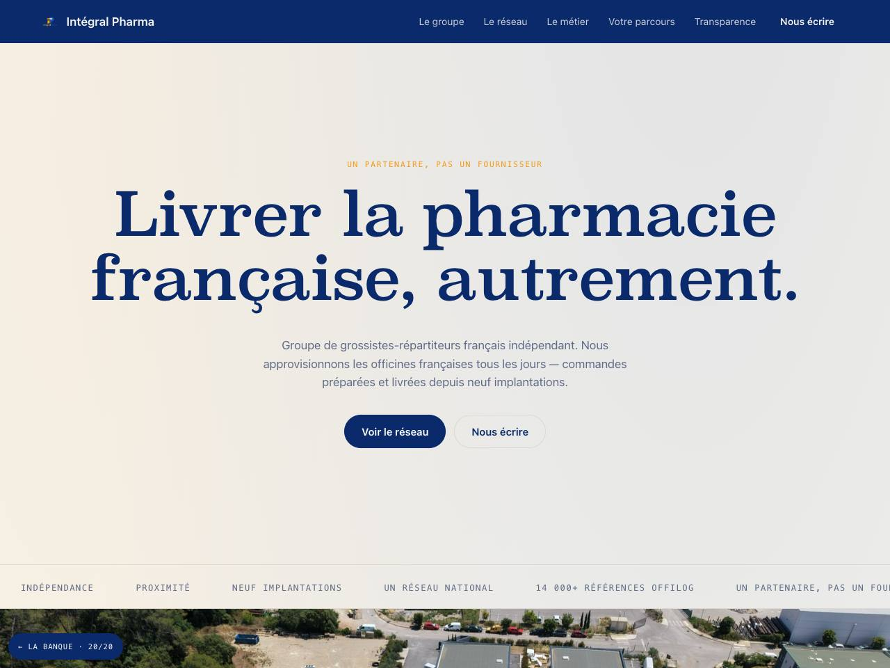
20 · Bleu nuit sur papierCentrée éditorialeDéfilé · Carrousel à flèchesMouvement · Glissement alterné3D · Inclinaison au survolLignes numérotées · Superclarendon